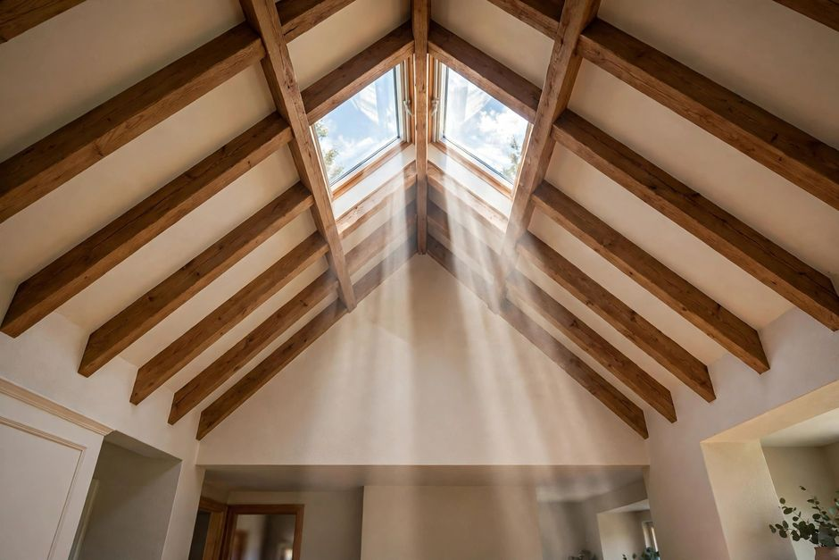

Active interior leaks
Water inside calls for containers, cleared belongings, and care around electrics. The roof side is temporary protection first, permanent scope second — see roof repair.
Emergency roof repair in Des Plaines, IL means temporary measures that limit water entry through a breached or leaking roof until a permanent repair can be planned: tarping, temporary patches, debris clearing, and documentation. This page explains what those measures cover, what to do inside while you wait, and how the permanent conversation follows. Call (224) 802-4866 during office hours.
Tell us what is happening with your roof. Office hours: Mon–Tue 7:30 AM–7:00 PM, Wed–Fri 7:30 AM–7:30 PM, Sat 8:30 AM–5:00 PM, Sun closed.
Call (224) 802-4866 → Phone is the only contact channel.
Emergency work is stabilization, not a finished repair. Its purpose is to limit water entry and further damage: a heavy-duty tarp over a breached section, a temporary patch or sealant at a failed joint, clearing of debris and blocked gutters, and photos documenting the damage. Permanent repair or replacement is a separate scope, discussed after the roof has been looked at and the damage recorded.
The triggers follow the seasons. Summer brings severe storms — across the NWS Chicago forecast area, the severe-weather season runs April through September, peaking in June and July — with wind damage and falling limbs. Winter brings ice-dam leaks and snow-load events, when water backs under the covering at the eaves. Homes around downtown Des Plaines and the Oakton Street corridor face the same seasonal pattern in different stock. Office hours are Monday and Tuesday 7:30 AM–7:00 PM, Wednesday through Friday 7:30 AM–7:30 PM, Saturday 8:30 AM–5:00 PM, and Sunday closed. After temporary measures, the permanent scope is discussed through roof repair or roof replacement, and storm-related damage through storm damage roof repair.
The measures below are described generally, as the temporary scope for a breached or leaking roof. What is possible for a given roof depends on its pitch, the weather, and safe access. Tarping and patching are temporary only — they are never a permanent fix, and no claim is made here about insurance covering them.
A heavy-duty tarp covers a breached section and is secured so wind does not lift it. Tarping limits water entry until permanent repair is planned. It is temporary protection, not a repair, and it needs checking after further wind or rain.
Temporary patches and sealants can slow water entry at a failed joint or small breach. They are holding measures: the underlying flashing, covering, or decking still needs permanent attention.
Fallen limbs and debris are cleared from the roof surface where access is safe, so the breach can be seen and covered. Tree removal itself is a separate trade's work.
Blocked gutters and downspouts are cleared so water moves away from the eaves rather than backing under the covering. This matters most where a breach sits near the eave.
Damage is photographed before temporary measures and after them, with dates noted. The record supports the permanent repair discussion and any conversation with your insurer.
Once the roof is protected, the damage is assessed and a permanent scope is discussed — repair where the damage is limited, replacement where it is widespread. Scheduling is discussed when you call.
Call (224) 802-4866 during office hours and describe what has happened: where water is showing, what the storm or failure did, and whether the breach is open. Office hours are listed on this page.
While waiting, catch water in containers, move belongings away from the leak, and keep clear of any area where water meets light fixtures or outlets. Do not go onto a wet or icy roof.
Tarping, temporary patching, and clearing are carried out as the roof, weather, and safe access allow. The aim is to limit water entry, not to finish the job.
Photos and notes record the damage and the temporary measures. Keep your own dated photos too, taken from the ground where it is safe.
The damage is assessed and a permanent scope discussed — repair or replacement, with findings shown. See roof inspection for how assessment is documented.
Temporary work uses a small set of materials and hand tools. Everything here is a holding measure, not a finished repair.
Cover breached sections as temporary protection. Tarps are secured against wind and checked after further weather.
Hold tarps in place without creating new leak paths where that can be avoided. Fastening through sound covering is kept to what the situation requires.
Clears debris and lifts damaged material so a breach can be seen and covered.
Sets fasteners for temporary patches and tarp battens.
Access to a damaged roof needs particular care: wet surfaces, loose material, and hidden soft spots. Where access is unsafe, work stays at ground level.
Photos record the damage and the temporary measures, with dates noted.
A spreading stain or active drip inside, often some distance from where water enters the roof. The ceiling below may sag if water collects.
Inside, catch the water and move belongings clear. Do not press on a sagging ceiling. Call during office hours and describe where water shows and when it started.
Missing courses, torn ridge caps, and decking exposed to the next rain. Surrounding shingles may be loosened without looking damaged.
Temporary tarping limits water entry until a permanent scope is planned. Photograph the damage from the ground, and see storm damage roof repair for documentation guidance.
Water staining near exterior walls during a thaw, with snow still on the roof and ice built at the eaves.
Do not climb onto an icy roof, and do not chip at ice — chipping damages the covering. Inside water control comes first; the eave and ventilation picture is addressed through attic ventilation once the leak is controlled.
Temporary protection fits situations where water is entering or the covering is open. Each situation below starts with safety inside, then protection on the roof, then a permanent plan.
Ask a pro →Water inside calls for containers, cleared belongings, and care around electrics. The roof side is temporary protection first, permanent scope second — see roof repair.
Wind-torn sections and limb damage leave the deck open. Tarping and clearing limit entry while the permanent scope is assessed — see storm damage roof repair.
Thaw water backing under the covering at the eaves shows as stains near exterior walls. Inside control first; no roof access in icy conditions.
Sometimes a breach is found days later, by a stain or a smell. Dated photos and a documented assessment still matter — see roof inspection.
“Thank you Patrick for doing an amazing job. Great work me and my wife are very happy. Also thanks for being reliable.”
Phil NegronGoogle review · 2 months ago · Gutter repairs
“Patryk was great to work with and extremely professional. I highly recommend WP exteriors and plan on using them again in the future!”
Brian Avila GaonaGoogle review · 5 months ago · Roof inspection
“I recently had the pleasure of working with WP Exterior for my roofing needs, and I must say, I couldn't be more satisfied with the outcome. From the moment I contacted them, it was evident that they truly value their customers. …”
Filip LiberaGoogle review · 2 years ago · Verbatim excerpt
Inside, catch water in containers, move belongings away from the leak, and keep clear of areas where water meets light fixtures or outlets. Note where water shows and when it started. Do not go onto a wet or icy roof. Call (224) 802-4866 during office hours and describe what has happened.
No. A tarp is temporary protection that limits water entry until a permanent repair can be planned. It needs checking after further wind or rain, and the underlying covering, flashing, or decking still needs permanent attention. Tarping is never described here as a permanent fix.
Summer severe storms bring wind damage and falling limbs — across the NWS Chicago forecast area, the severe-weather season runs April through September, peaking in June and July. Winter brings ice-dam leaks, when thaw water backs under the covering at the eaves, and snow-load events. Wind-lifted shingles and fallen debris can breach a roof in any season.
The damage is documented with photos and notes, the roof is assessed, and a permanent scope is discussed — repair where the damage is limited, replacement where it is widespread. Scheduling for the permanent work is discussed when you call, and the assessment follows the documented findings.

Skylight InstallationSkylights are a common breach point at flashing and curb. Replacement and reflashing once the roof is protected.Explore → Roof ReplacementWhere a breach reveals widespread failure, replacement follows temporary protection — tear-off, ice barrier, and a new covering.Explore →
Roof ReplacementWhere a breach reveals widespread failure, replacement follows temporary protection — tear-off, ice barrier, and a new covering.Explore → Roof RepairWhere damage is limited, permanent repair follows temporary measures: shingles, flashing, boots, and valleys.Explore →Roof InspectionAssessment with photos and written findings, so the permanent scope follows evidence rather than assumption.Explore →
Roof RepairWhere damage is limited, permanent repair follows temporary measures: shingles, flashing, boots, and valleys.Explore →Roof InspectionAssessment with photos and written findings, so the permanent scope follows evidence rather than assumption.Explore → Gutter InstallationGutters and downspouts affect eave leaks and ice dams. Clearing and condition, assessed with the roof.Explore →
Gutter InstallationGutters and downspouts affect eave leaks and ice dams. Clearing and condition, assessed with the roof.Explore → Storm Damage Roof RepairHail and wind damage, documentation guidance, and the insurance process in general terms, on one page.Explore →
Storm Damage Roof RepairHail and wind damage, documentation guidance, and the insurance process in general terms, on one page.Explore → Flat Roof RepairLow-slope sections breach differently: seams, ponding, and punctures on additions, porches, and dormers.Explore →
Flat Roof RepairLow-slope sections breach differently: seams, ponding, and punctures on additions, porches, and dormers.Explore → Attic VentilationVentilation and eave details sit behind many winter leaks. The mechanics, and the insulation boundary.Explore →
Attic VentilationVentilation and eave details sit behind many winter leaks. The mechanics, and the insulation boundary.Explore →Call (224) 802-4866 during office hours — Monday and Tuesday 7:30 AM–7:00 PM, Wednesday through Friday 7:30 AM–7:30 PM, Saturday 8:30 AM–5:00 PM, Sunday closed — and describe what has happened. Inside, catch water and keep clear of wet electrics while you wait.
Call (224) 802-4866 →Call (224) 802-4866 during office hours to talk about your roof. Tell us what you are seeing — a stain, a missing shingle, damage after a storm — and we will talk through what a visit would look at. Office hours: Monday and Tuesday 7:30 AM–7:00 PM, Wednesday through Friday 7:30 AM–7:30 PM, Saturday 8:30 AM–5:00 PM, Sunday closed.